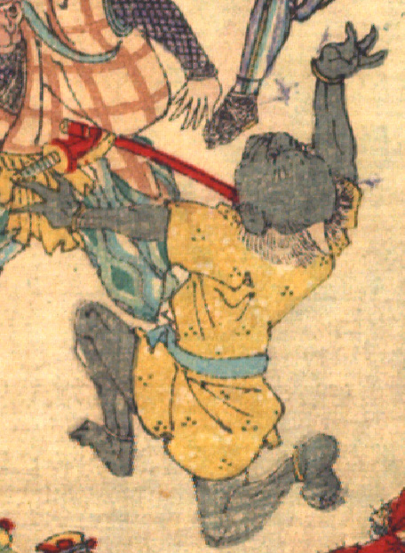

浅黒い肌の鬼。額が禿げ上がり、頭頂に白い角が1本生えている。裾の短い黄色の着物を着て、両手首両足首に黄色の輪をはめている。襲われて、肩膝立ちになり、背を仰け反らせている。
著作者：David Thompson／出典：親書誌：U426_nichibunken_0116：Momotaro／日付：2006／資源識別子：U426_nichibunken_0116_0004_0005
Copyright (c)2010- International Research Center for Japanese Studies, Kyoto, Japan. All rights reserved.